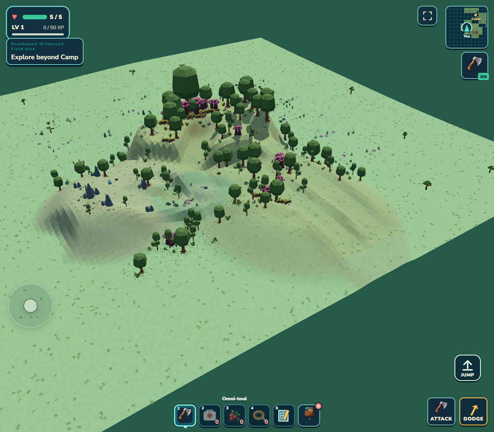
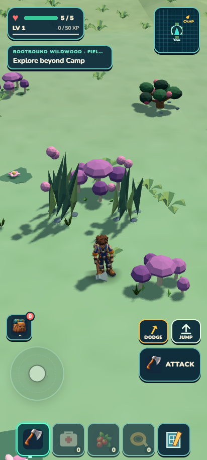
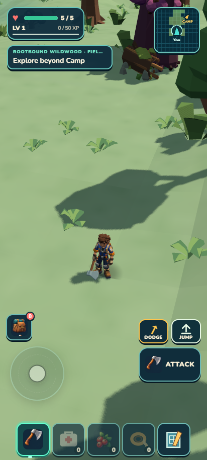
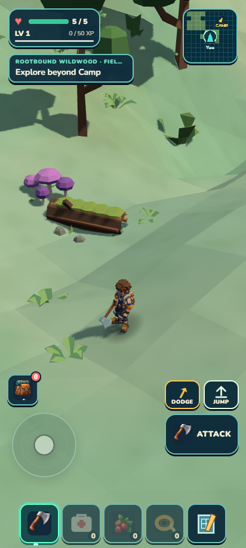
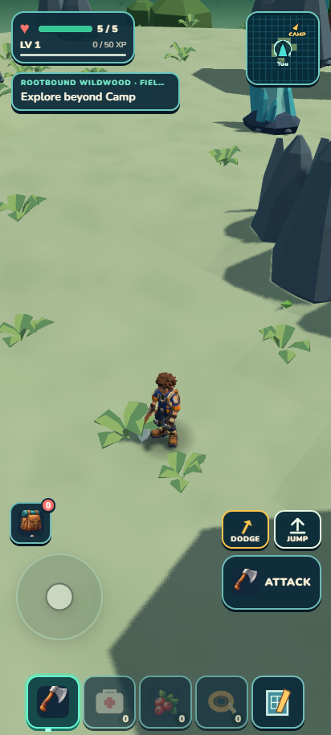
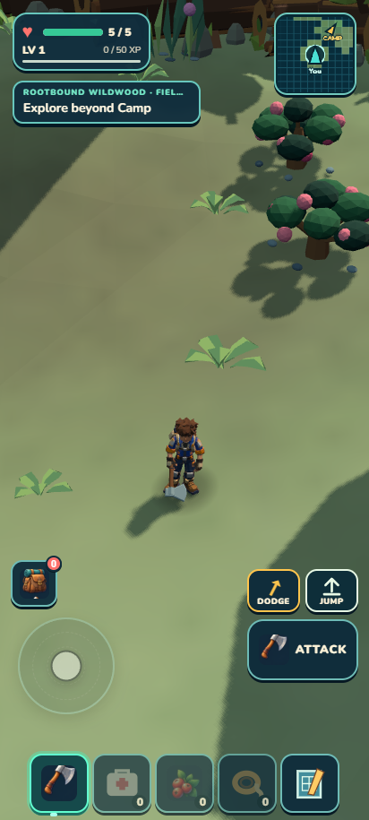
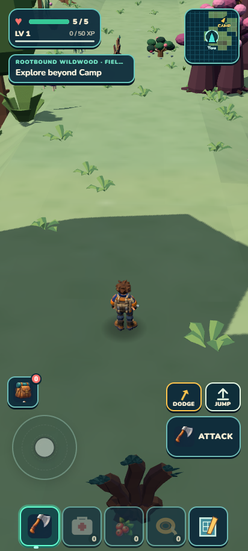

Wildkin Frontier · local development · September 15
Rootbound now has a vertical journey.
A low meadow leads into rising root galleries, a sheltered Lantern Grove, an optional mineral climb and the Heartroot summit. A different western descent closes the loop. These are captures from the actual game.
10.5 mCrown elevation above Meadow
5 placesConnected subhabitats with distinct roles
7 + 2Authored gathering sources and caches
112Maximum resident forest tree colliders

Diagnostic overview of the loaded regionThe terrain is physical. Rendering, placement and collision share its surface; this raised camera is for reviewing the layout.
Walk through the five places

Orientation MeadowLow clearing, gathering supplies and an open arrival.

Root GalleriesRising contours, forest margins and an optional gathering alcove.

Lantern GroveA lower bowl, deadwood, fungi and the protected Trailgloam home.

Thornstone VergeA separate climb with iron and crystal, now framed by a visible thornstone edge.

Heartroot CrownA raised destination with a cache and exceptional tree silhouette.

The western descentA second route through the forest returns to the Meadow.
What was checked
After sliding was added, the complete 11-waypoint main circuit took 142.087 seconds and the optional branch took 43.689 seconds in normal play. All 699 recorded samples stayed grounded, health stayed at 5/5, and both runs reported no page errors. Each walk used one initial setup followed by ordinary movement controls.
The final checkpoint passed all 1,462 tests, world/campaign/build validation and ZIP packaging (24.79 MiB). Both caches opened through native controls and their claimed state survived export/reload. This is desktop mobile emulation, not a physical-phone performance result. Independent review recommends retaining the region, Verge repair and slide mechanics.
Steep terrain now carries you downhill
Walking ends above 45°. Terrain from there through 60° makes the player slide with limited steering; steeper ground enters a fall. Actual 52° and 68° Rootbound banks were tested without movement input. The explorer holds a provisional braced pose during slides, using the existing rig.
Actual slope trialsDiagnostic setup precedes each trial. After placement, physics carries the idle player downhill. Scout mode protects the live save; the full route walks above use normal play.
Next polish
Make the height changes easier to read while walking, frame a view outward from the Crown, and build a stronger deadwood boundary behind the Grove's open encounter floor. The continuous Rootbound goal remains active.